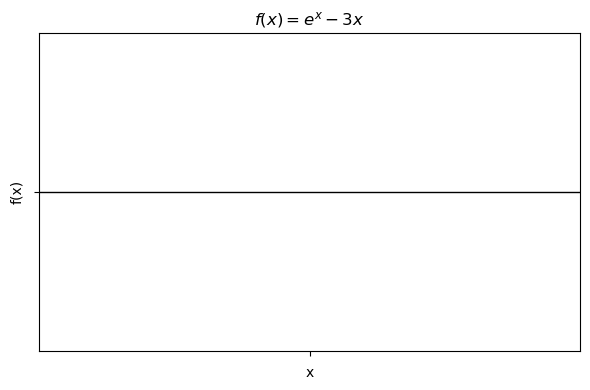
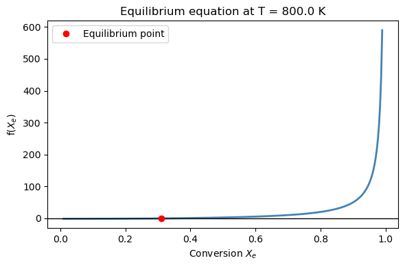
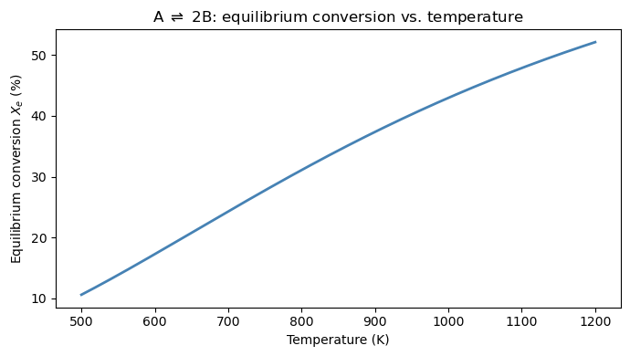

Lab 11: Root Finding#
Examples (by instructor)#
In this lab you will practice the root-finding tools from Chapter 16:
Task |
Tool |
Key syntax |
|---|---|---|
Polynomial roots (all at once) |
|
|
Single equation, bracketed |
|
|
System of nonlinear equations |
|
|
Workflow for every root-finding problem:
Rewrite the equation as \(f(x) = 0\)
Plot \(f(x)\) to count roots and find brackets
Choose your tool and solve
Verify by checking \(f(x^*) \approx 0\)
Example 1: van der Waals Molar Volume (brentq)#
The van der Waals equation of state for CO₂ at \(T = 310\) K, \(P = 70\) bar:
Constants for CO₂: \(a = 3.658\) L²·bar/mol², \(b = 0.04286\) L/mol, \(R = 0.08314\) L·bar/(mol·K).
Step 1: Always plot \(f(V)\) first to locate the bracket. Step 2: Call brentq with the bracket.
import numpy as np
import matplotlib.pyplot as plt
from scipy.optimize import brentq, fsolve
R = 0.08314 # L·bar / (mol·K)
a = 3.658 # L²·bar / mol² (CO2)
b = 0.04286 # L/mol (CO2)
T = 310.0 # K
P = 70.0 # bar
# Step 2: solve with brentq
Example 2: Intersection of Two Curves (fsolve)#
Find where the parabola \(y = x^2\) meets the line \(y = 2 - x\). Rewrite as a system \(\mathbf{F}(\mathbf{x}) = \mathbf{0}\):
There are two solutions — use different initial guesses to find each. Always print residuals to verify fsolve converged to a true solution.
Warm-Up: Syntax Practice#
Short exercises to get comfortable with the root-finding tools before the main problems.
Exercise 1 — brentq: find the root of a simple function.
Find the root of \(f(x) = e^x - 3x\) near \(x = 1\) using brentq.
Plot \(f(x)\) on \([-1, 3]\) to identify a bracket where the function changes sign.
Call
brentq(f, a, b)with your bracket.Print the root and verify \(f(x^*) \approx 0\).
import numpy as np
import matplotlib.pyplot as plt
from scipy.optimize import brentq, fsolve
def f(x):
return ___
x_plot = np.linspace(-1, 3, 300)
fig, ax = plt.subplots(figsize=(6, 4))
ax.plot(___, ___, 'steelblue', linewidth=2)
ax.axhline(0, color='k', linewidth=1)
ax.set_xlabel('x'); ax.set_ylabel('f(x)')
ax.set_title(r'$f(x) = e^x - 3x$')
plt.tight_layout(); plt.show()
root = ___ # f(1) < 0, f(2) > 0
print(f"Root: x* = {root:.6f}")
print(f"f(x*) = {f(root):.2e}")

---------------------------------------------------------------------------
ValueError Traceback (most recent call last)
Cell In[3], line 18
14 plt.tight_layout(); plt.show()
16 root = ___ # f(1) < 0, f(2) > 0
---> 18 print(f"Root: x* = {root:.6f}")
19 print(f"f(x*) = {f(root):.2e}")
ValueError: Unknown format code 'f' for object of type 'str'
Exercise 2 — np.roots: all roots of a polynomial.
Find all roots of the cubic \(p(V) = V^3 - 6V^2 + 11V - 6\) using np.roots.
Recall: pass coefficients from highest to lowest degree — np.roots([1, -6, 11, -6]).
Print each root and verify \(p(V^*) \approx 0\) for each real root.
coeffs = [1, -6, 11, -6] # coefficients of p(V) = V^3 - 6V^2 + 11V - 6
roots = ___
print("All roots:", roots)
for r in roots:
if np.isreal(r):
print(f" V* = {r.real:.4f}, p(V*) = {np.polyval(___, r.real):.2e}")
Exercise 3 — fsolve: two nonlinear equations.
Find the intersection(s) of \(y = x^2\) and \(y = 2 - x\) by solving:
Use fsolve with two different initial guesses to find both solutions. Always print the residuals to verify.
def equations(vars):
x, y = vars
eq1 = ___ # y - x^2
eq2 = ___ # y + x - 2
return [___, ___]
sol1 = fsolve(___, x0=[-2.0, 3.0]) # guess near one solution
sol2 = fsolve(___, x0=[___, ___]) # guess near the other (1.0, 1.0)
print(f"Solution 1: x = {sol1[0]:.6f}, y = {sol1[1]:.6f} residuals: {equations(sol1)}")
print(f"Solution 2: x = {sol2[0]:.6f}, y = {sol2[1]:.6f} residuals: {equations(sol2)}")
Practice Problems (by students)#
Problem 1: Reaction Equilibrium — Effect of Temperature#
Consider the gas-phase reaction \(\text{A} \rightleftharpoons 2\,\text{B}\) at \(P = 3\) atm. The equilibrium constant varies with temperature as:
The equilibrium condition (starting from pure A) is:
(a) At \(T = 800\) K, plot \(f(X_e)\) on \([0.01, 0.99]\), then use brentq to find the equilibrium conversion. Print \(X_e\), the mole fractions of A and B, and the residual.
import numpy as np
import matplotlib.pyplot as plt
from scipy.optimize import brentq, fsolve
P = 3.0 # atm
def Keq(T):
return TODO
def f_eq(X, T):
return TODO
T_val = 800.0 # K
X_arr = np.linspace(0.01, 0.99, 300)
X_eq = TODO # Use brentq to solve f_eq(X, T_val) = 0 for X in (0, 1)
y_A = TODO #
y_B = TODO #
fig, ax = plt.subplots(figsize=(6, 4))
ax.plot(X_arr, f_eq(X_arr, T_val), 'steelblue', linewidth=2)
ax.axhline(0, color='k', linewidth=1)
ax.set_xlabel('Conversion $X_e$'); ax.set_ylabel('f($X_e$)')
ax.set_title(f'Equilibrium equation at T = {T_val} K')
ax.plot(X_eq, 0, 'ro', label='Equilibrium point')
ax.legend()
plt.tight_layout(); plt.show()
print(f"T = {T_val} K")
print(f"Equilibrium conversion: X_e = {X_eq:.4f} ({100*X_eq:.1f}%)")
print(f"y_A = {y_A:.4f}, y_B = {y_B:.4f}")
print(f"Residual: {f_eq(X_eq, T_val):.2e}")

T = 800.0 K
Equilibrium conversion: X_e = 0.3109 (31.1%)
y_A = 0.5257, y_B = 0.4743
Residual: -1.44e-14
(b) Compute and plot \(X_e\) vs. \(T\) for temperatures from 500 K to 1200 K. Does conversion increase or decrease with temperature? Is this consistent with Le Chatelier’s principle for an endothermic reaction (\(\Delta H > 0\))?
temps = np.linspace(500, 1200, 200)
X_eq_list = []
for T_val in temps:
X_eq_list.append(TODO)
fig, ax = plt.subplots(figsize=(7, 4))
ax.plot(temps, np.array(X_eq_list) * 100, 'steelblue', linewidth=2)
ax.set_xlabel('Temperature (K)')
ax.set_ylabel('Equilibrium conversion $X_e$ (%)')
ax.set_title(r'A $\rightleftharpoons$ 2B: equilibrium conversion vs. temperature')
plt.tight_layout()
plt.show()
# Answer: does X_e increase or decrease with T?
print("As T increases, X_e ##TODO")

As T increases, X_e ...
Problem 2: Simultaneous Reaction and Energy Balance (fsolve)#
A CSTR operates at steady state with the exothermic reaction \(\text{A} \rightarrow \text{B}\). The mole and energy balances couple conversion \(X\) and temperature \(T\):
with parameters:
\(\tau = 100\) s (residence time)
\(k(T) = 10^6 \exp(-8000/T)\) s⁻¹ (Arrhenius rate constant)
\(\Delta H_{rxn} = -50{,}000\) J/mol (exothermic)
\(\rho C_p = 1000\) J/(L·K), \(T_0 = 300\) K (feed temperature)
Solve for the steady-state conversion \(X\) and temperature \(T\).
(a) Define the system of equations and solve with fsolve using initial guess \(X_0 = 0.5\), \(T_0 = 350\) K. Print the solution and verify the residuals.
import numpy as np
from scipy.optimize import fsolve
tau = 100.0 # s
dHrxn = -50000.0 # J/mol
rho_Cp = 1000.0 # J/(L·K)
T_feed = 300.0 # K
def k_arr(T):
return TODO
def cstr_balances(vars):
X, T = vars
mole_balance = TODO
energy_balance = TODO
return TODO
sol = TODO
X_ss, T_ss = sol
print(f"Steady-state conversion : X = {X_ss:.4f} ({100*X_ss:.1f}%)")
print(f"Steady-state temperature: T = {T_ss:.2f} K")
print(f"Residuals: {cstr_balances(sol)}")
Steady-state conversion : X = 0.0003 (0.0%)
Steady-state temperature: T = 300.01 K
Residuals: [8.61940727125976e-18, -2.545696986544499e-11]
(b) Exothermic CSTRs can have multiple steady states. Try three different initial guesses and see if you find different solutions. Print the \((X, T)\) pair for each, and verify the residuals in all cases.
guesses = [
TODO, # near low-conversion steady state (0.1, 310 K)
TODO, # intermediate guess (0.5, 350 K)
TODO, # near high-conversion steady state (0.9, 400 K)
]
print(f"{'Guess (X, T)':>20} {'Solution X':>12} {'Solution T (K)':>16} {'Residuals':>20}")
print("-" * 76)
for x0 in guesses:
sol = TODO
res = TODO
print(f" ({x0[0]:.1f}, {x0[1]:.0f} K) {sol[0]:>12.4f} {sol[1]:>16.2f} {res}")
Guess (X, T) Solution X Solution T (K) Residuals
----------------------------------------------------------------------------
(0.1, 310 K) 0.0003 300.01 [-2.2183860651225906e-15, -2.7684521342052903e-11]
(0.5, 350 K) 0.0003 300.01 [8.61940727125976e-18, -2.545696986544499e-11]
(0.9, 400 K) 0.0003 300.01 [-9.188659653037307e-12, 1.729816290207964e-11]